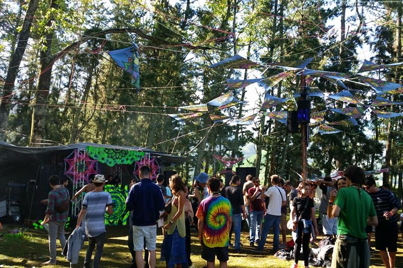

Decoração de Eventos
Festas Alternativas
Em 2017 começei a fazer parte da organização Elements Productions nos Açores, na decoração do festival Natural Elements. Desde então tenho feito várias decorações para festas como artista plástica, ainda estando nos Açores fazia encomendas para organizações em Portugal Continental. Quando mudei-me para o Continente as encomendas começaram a ser mais frequentes. Estar dentro da organização de um evento requer uma grande responsabilidade e representava o que meu curso de lienciatura pretendia.


